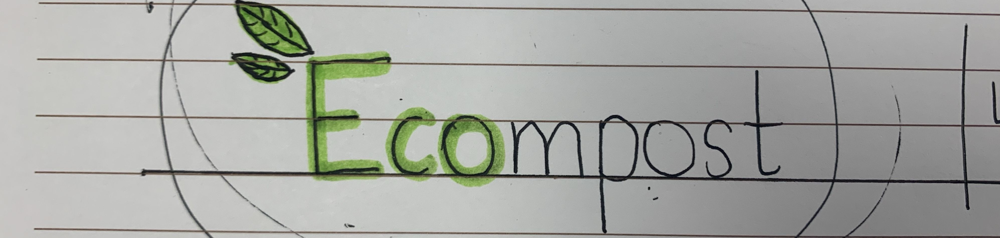

We are ECOMPOST, we created this business idea in July 2024! Our team (Aanvi,Nadia,Alessandra) created ECOMPOST to help solve 2 environmental problems: Food waste and No knowledge of what to do with our waste! We decided to create a business and app to solve this! Our mission is to help our community better deal with their waste, and with ECOMPOST, this is possible!
The business idea would be that we would collect our neighbourhoos food waste, take it to a factory and convert into compost. We would then sell this compost to generate revenue for our company! If we were to actually implement this idea, we would ask the Muncipality of Aglantzia to help fund this porject, as we are aware they care a lot about these issues! The app complements this by promoting proper waste management (SEE BELOW).
The app uses machine learning techniques to create a database, and includes a scanner to identify the correct bin for waste items. To make the app engaging, we included a waste-sorting game inspired by "Paper Toss". Players are given trash items, and they need to aim and throw the waste into the right bins. With every correct toss, they earn points, which can be redeemed for discounts when buying our compost.